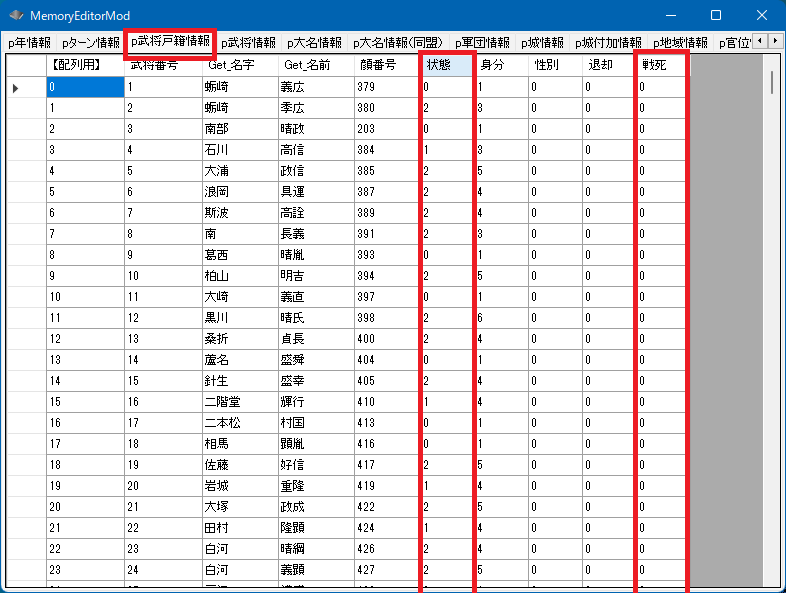

メイン画面、戦争画面にかかわらず、武将を強制的に死亡させるためのAPIです。
void カスタム::On_プレイヤ担当ターン《メイン画面》() {
int iBushouID = Get_武将番号【配列用】(顔番号::武田晴信);
if (0 <= iBushouID && iBushouID < 最大数::武将情報::配列数) {
// (この季節)戦場で戦死したか、もしくは、死亡状態
if (p武将戸籍情報[iBushouID].戦死 == TRUE || p武将戸籍情報[iBushouID].状態 == 状態::死亡) {
デバッグ出力 << "武田晴信は死亡しています" << endl;
}
}
}
死亡した武将は、そのうち天翔記というゲーム枠から外さるため、やがて「判定しようにもそもそも存在してない」状態となります。
死亡状態は最短だと１季節です。
それ以降、「待機武将や仮想武将が登場」する際、武将スロットの532枠のうち、「空きスロット」や「死亡している武将スロット」から選択されて、
新たな武将用のスロットとして再使用されます。

bool Set_武将状態《→死亡》(int 死亡武将番号【配列用】, int 犯人武将番号【配列用】=-1)
第２引数はあまり気にしなくても良く、特に指定する必要はない。
その死亡が誰の仕業かが分かっている場合には指定することにより、将来、内部処理的により適切になる可能性がある。
メイン画面では、通常下記のように、「On_軍団ターン変更」や、「On_プレイヤ担当ターン」など、
メイン画面の「ターン切り替わり目」系であれば安全に呼び出せる。
その他のタイミングは危険である。
void カスタム::On_プレイヤ担当ターン《メイン画面》() {
int iBushouID = Get_武将番号【配列用】(顔番号::織田信長);
Set_武将状態《→死亡》(iBushouID);
}
void カスタム::On_軍団ターン変更《メイン画面》(int 軍団番号) {
int iBushouID = Get_武将番号【配列用】(顔番号::毛利元就);
Set_武将状態《→死亡》(iBushouID);
}
戦争画面では、On_噴出メッセージ直前や
On_残りターン変更《戦争画面》時に安全に呼び出せる。
string カスタム::On_噴出メッセージ直前(string 武将名, string 元メッセージ, メッセージ関連情報型 メッセージ関連情報) {
// 混乱をしかけたら勝手に死亡。
if ( 武将名 == "真田幸隆" && Is_正規表現マッチ(元メッセージ, "そうやすやすとは|技をもってしても|分別がつかなく") ) {
int iBushouID = Get_武将番号【配列用】(顔番号::真田幸隆);
Set_武将状態《→死亡》(iBushouID);
}
// 変更しない場合""
return "";
}
void カスタム::On_残りターン変更《戦争画面》(int 残りターン数) {
// ターン切り替わり時に今表示中の戦場マップの誰かが「フッ…」と死亡。
番号リスト型 list = Get_出陣中の武将番号リスト【配列用】《表示中マップ》();
if ( list.size() > 0 ) {
Set_武将状態《→死亡》(list[0]);
}
}
武将が戦場で死亡したからといって、突然ただちに、
p武将戸籍情報[i].状態 == 状態::死亡
になったりはしないので注意すること!!
天翔記の本来の動作でも、そのようなことにはならない。
武将が戦場で死亡した場合、
p武将戸籍情報[i].戦死 == TRUE
というように「一端戦死」という状態となり、
戦争が終わったタイミングで、初めて正式に、
p武将戸籍情報[i].状態 == 状態::死亡 となり、
代わりに、
p武将戸籍情報[i].戦死 == FALSE
と値がFALSEへと戻る。
「武将 － 死亡」に関する主な所は以上となります。
詳しくは「武将情報型.h」や「武将情報列挙.h」などを参照してください。